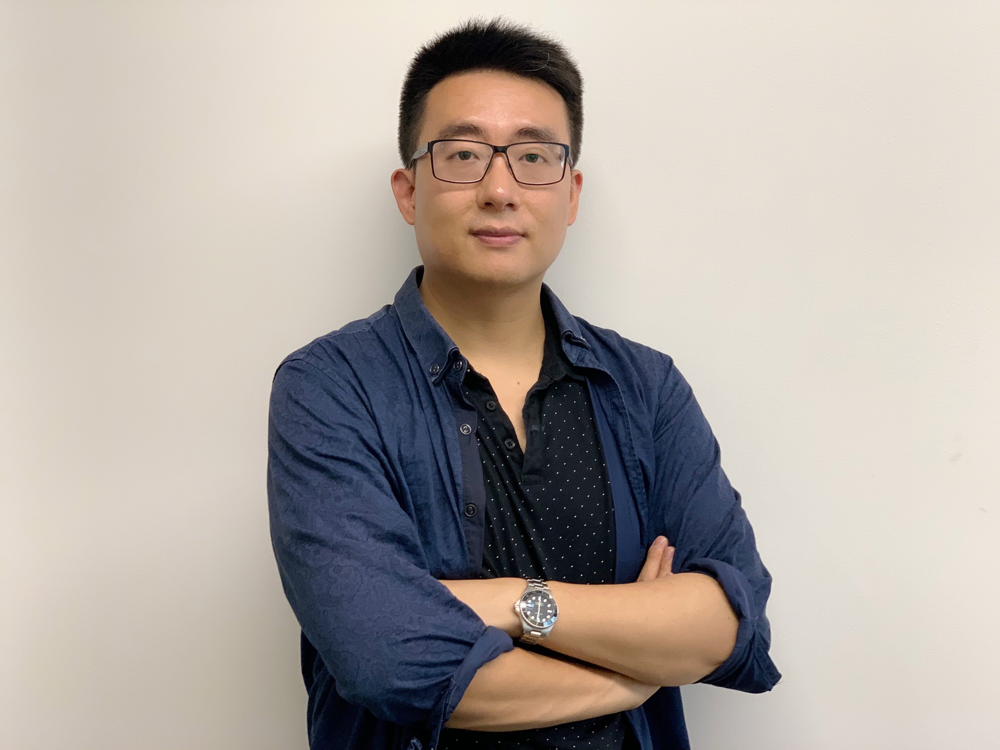

Bio
A/Prof. Xi Zheng is a distinguished leader in cyber-physical systems and AI trustworthiness, with substantial achievements in research, funding, and academic leadership. In 2024, he was awarded the prestigious $960,412 ARC Future Fellowship for “Advancing Robust Autonomy in Cyber-Physical Systems,” making him the only recipient in Software Engineering and one of seven in IT across Australia. This marks the first Future Fellowship in the history of Macquarie University's School of Computing.
A/Prof. Zheng has successfully secured over $2.4 million in competitive funding from the Australian Research Council (including 1 Future Fellowship, 2 Linkages, and 1 Discovery project) and Data61, with a focus on safety analysis, model testing, verification, and trustworthy AI for autonomous vehicles. He is currently leading a $537,041 ARC LP proposal on autonomous path planning for passenger aircraft in collaboration with MIT-based startup Savion and is also a Chief Investigator on major initiatives, such as a $10 million CRC-P bid developing neuro-symbolic-enabled safe and reliable autonomous passenger aircraft systems.
News (updated from Nov 2024 onwards)
Stay tuned for the latest updates on my research, publications, events, and more.
- [Jan 2025] I am honored to be invited to join CAV'25 TPC.
- [Jan 2025] I am honored to be invited to join ICSE'26 TPC.
- [Dec 2024] I am honored to be awarded the Dagstul Seminar for Advancing Testability and Verifiability of CPS with Neurosymbolic and Large Language Models (202501048) scheduled Oct 2026 as the lead organizer along with Ruzica, Simin, Armando.
- [Nov 2024] I am honored to be awarded the Shonan Seminar for LLM-guided Synthesis, Verification, and Testing of Learning-Enabled CPS (235) scheduled Mar 2026 as the lead organizer along with Sanjoy and Simon.
- [Nov 2024] Our paper on Online testing for autonomous drone landing was accepted to ICSE 2025! Congratulations to Linfeng and all the authors and our ARC Linkage partner Skyynetwork.